Токио · Курамаэ · бар
NOMURA SHOTEN в Курамаэ: стойка бармена и магазин японского крафтового джина
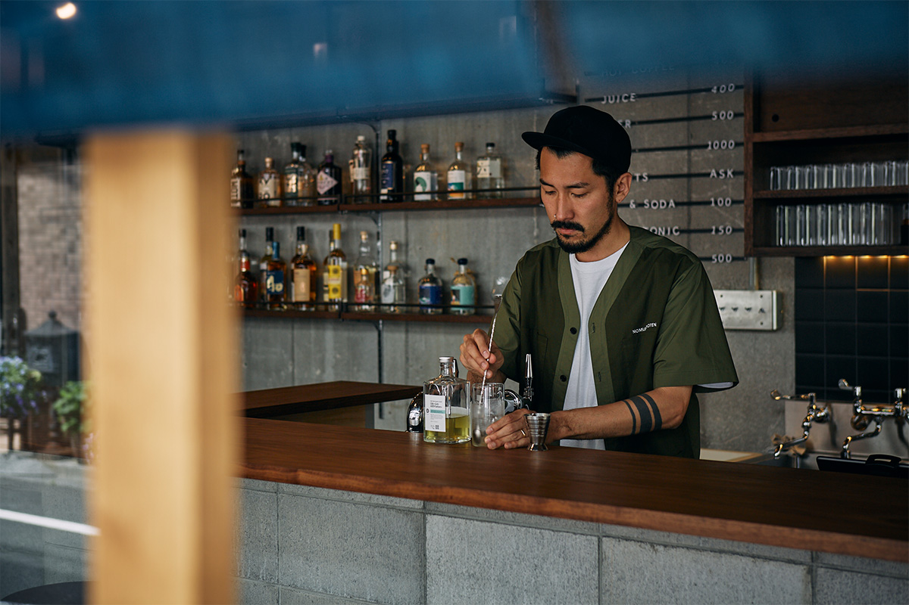
В Курамаэ, старом торговом квартале Токио, есть магазин, где бутылку можно не только купить, но и сразу выпить у стойки. Его открыл в 2022 году бармен Соран Номура, который семь лет проработал в барах Лондона.
Квартал
Курамаэ и бывший склад ветчины
Курамаэ в районе Тайто с эпохи Эдо жил оптовой торговлей: здесь стояли оптовые лавки, на которых держалось японское ремесло. Позже за кварталом закрепилось прозвище «токийский Бруклин»: здесь, рядом со старыми лавками, много заведений со своим характером.
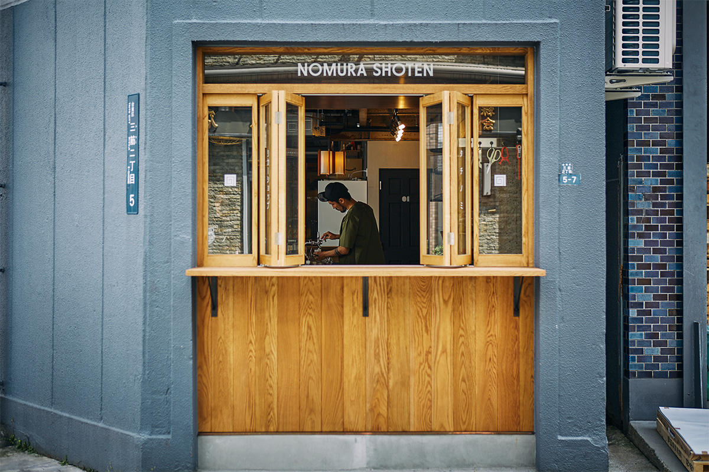
NOMURA SHOTEN открылся здесь 14 мая 2022 года. Это «какууси», японский формат, когда в винном магазине пьют стоя прямо у прилавка, только в версии бармена. Здание раньше было складом компании, которая делала ветчину. Интерьер придумала дизайнер, работавшая над Fuglen Tokyo: конструкцию склада оставили как есть, а в центре поставили дегустационную стойку, к которой можно подойти со всех сторон, чтобы все гости были на равных.
Хозяин
От лондонских баров к своей лавке
Соран Номура в 21 год один уехал в Англию и около семи лет работал барменом в Лондоне. Вернувшись в Японию, он стоял за стойкой кафе-бара Fuglen Tokyo у парка Ёёги и получил там немало наград. В 2017 году он основал свою консалтинговую марку ABV+: составлял коктейльные и барные карты для токийских заведений, в том числе для бара отеля K5, выпускал японские спиртные напитки и коктейли в бутылках.
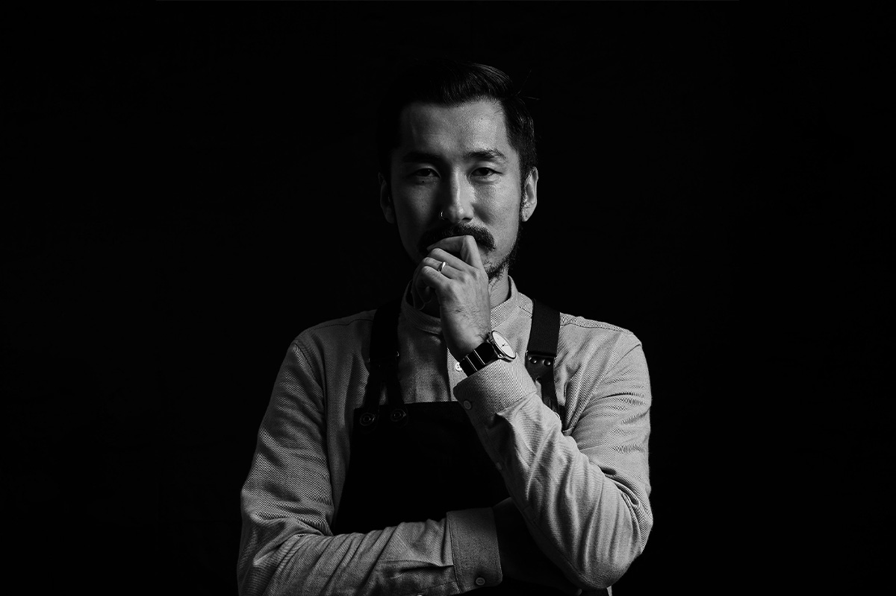
NOMURA SHOTEN стал его первым собственным заведением. Семья подсказала, куда двигаться дальше.
«Родня отца держала винную лавку, родня матери торговала сушёными продуктами. Поэтому, поработав барменом, я чувствовал что-то вроде долга когда-нибудь заняться и торговлей. Хочется, чтобы сюда мог запросто заглянуть кто угодно: подержать в руках напитки, которые я делал, и спокойно попробовать то, что я собрал по всему миру. И не пропустите сэнто напротив»
Соран Номура
Место, по словам сотрудников, хозяин выбрал как раз из-за этой бани: он очень любит сэнто, а одна стоит прямо через дорогу.
Стойка
Выбрать бутылку и выпить на месте
Сам хозяин описывает формат так: стоячий бар, в котором смешались лондонский паб и японский какууси. За дверью сразу начинается длинная стойка, за ней настоящая кухня.
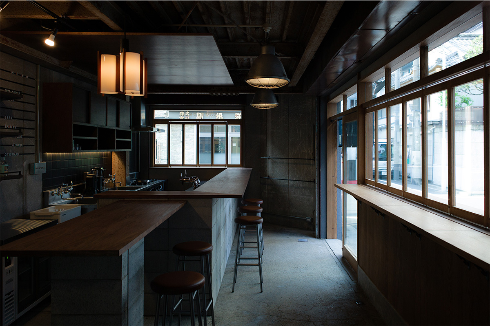
Правила простые. Гость выбирает бутылку на полке и несёт её к стойке, а бармен предлагает, как её выпить: с тоником, с содовой или иначе. Всё, что стоит на полках, можно и купить домой.
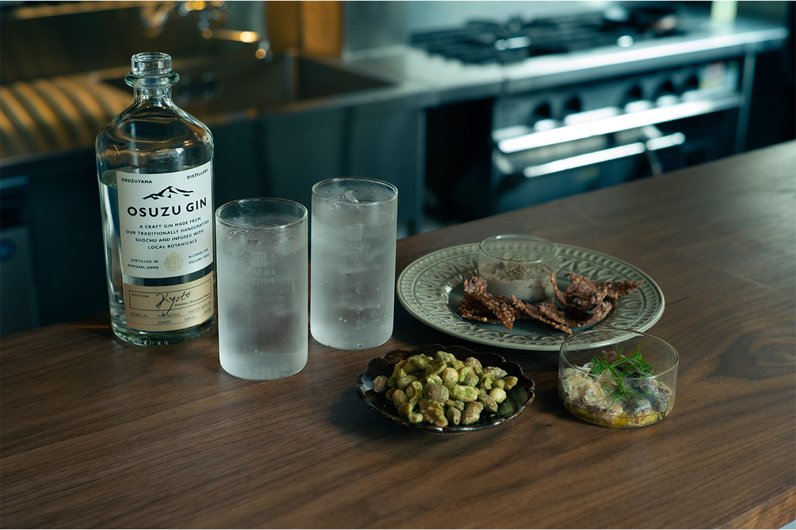
За год с небольшим после открытия публика стала разнообразной: кто-то заходит на крафтовое пиво после бани, кто-то, в том числе женщины, приходит один.
«Мы собираем побольше интересного, чтобы гости узнали, какой глубокий мир у напитков. Считайте нас ступенькой перед настоящим баром»
Соран Номура
Полки
Японский джин, ром и бутылки хозяина
В глубине зала есть погреб размером примерно в три татами. Раньше там была холодильная камера склада, и теплоизоляцию нарочно оставили: напитки хранятся при ровной температуре. На полках стоят бутылки, к которым приложил руку Соран Номура, и витрина похожа на небольшую галерею его работ. Их тоже можно купить.
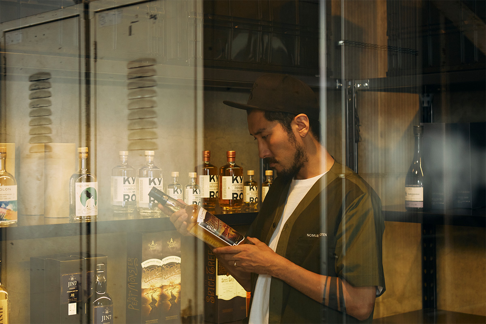
Главное на полках магазина это японский крафтовый джин и ром. В 2022 году здесь собирались продавать коктейли в бутылках A(B)Vation+ самого Номуры, ром ONERUM проекта, который начала на Окинаве Mizuho Shuzo, старейшая винокурня Сюри, сётю винокурен Миядзаки и Кагосимы, крафтовое пиво и натуральное вино.
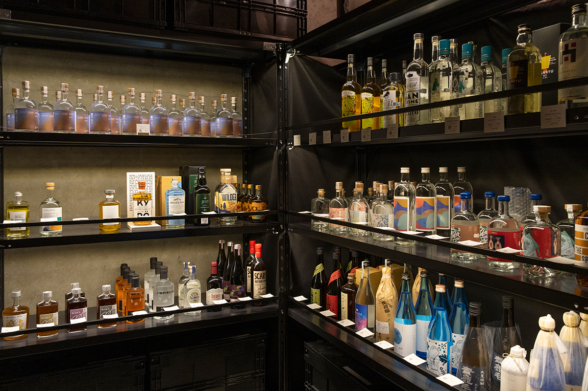
Соран Номура сам ездит к производителям и участвует в создании японского джина и рома. Один из джинов, который он выбрал за природу тех мест, это OSUZU GIN винокурни Osuzuyama Distillery у водопадов горы Осудзу в префектуре Миядзаки. Он сладковатый и лёгкий в питье, с очень богатым ароматом: в спирте настаивают можжевельник, японский перец сансё, кумкват, цитрусы хюганацу и юдзу. Крепость 45 градусов, бутылка 700 мл стоила 4700 иен в 2024 году. Ароматному японскому джину, по словам бармена, лучше подходит не сладкий тоник, а содовая или горячая вода.
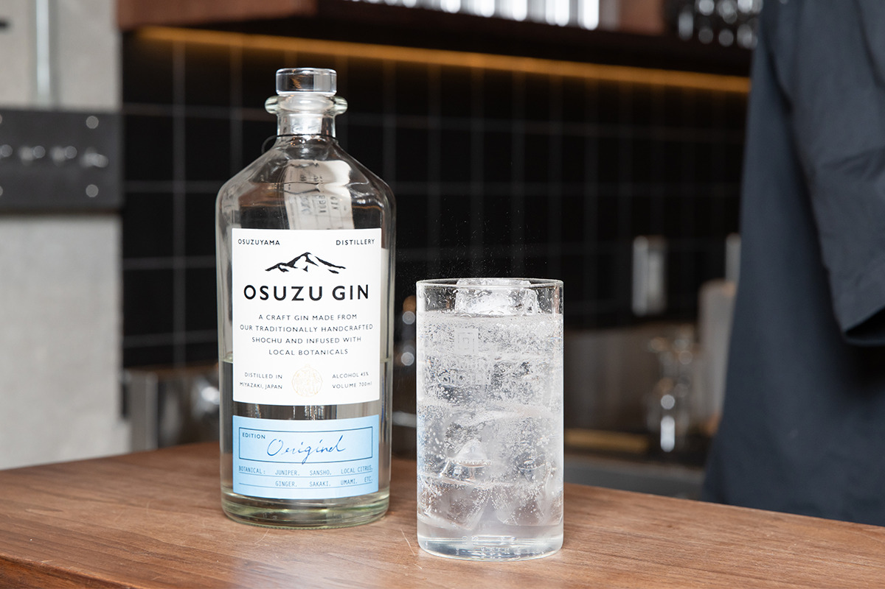
Кухня
Закуски к стакану
Меню курирует шеф ресторана caveman в отеле K5 в Нихонбаси. Есть еда, которую удобно держать одной рукой, например бао, есть закуски от маринованных овощей до сухого карри.
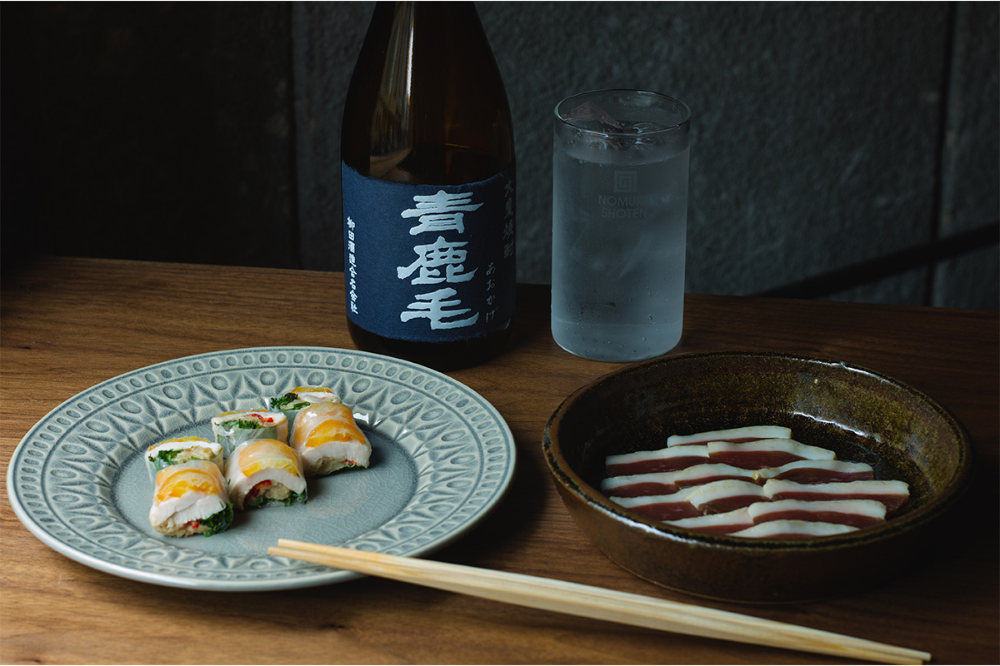
Сюмай здесь делают из ягнёнка: в фарш добавляют крупно нарезанный корень лотоса, чтобы он хрустел, сверху посыпают цедрой юдзу и подают с непальским перцем сансё. К ним хорошо подходит крафтовое пиво.
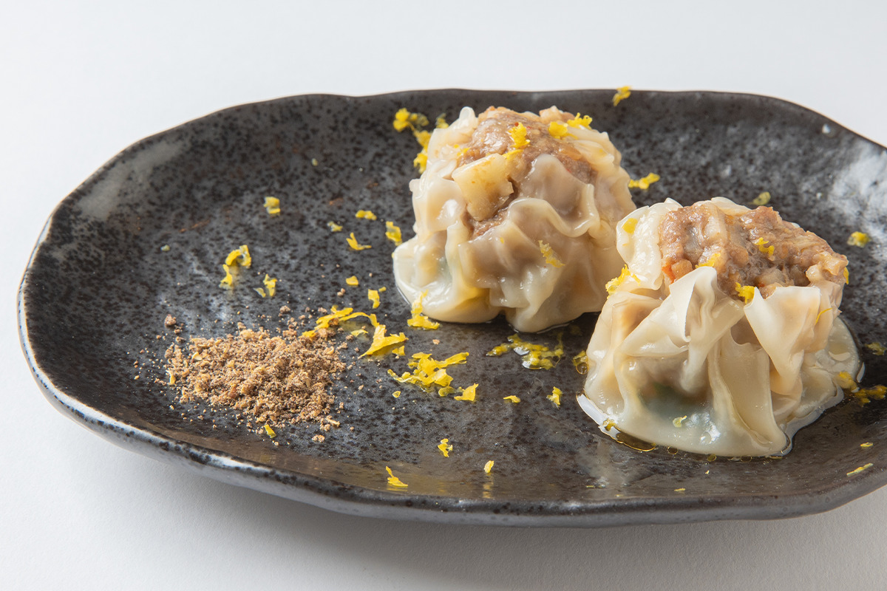
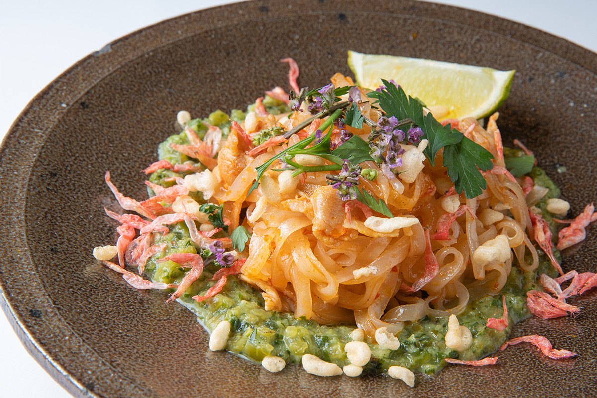
После бани
Сэнто через дорогу
Наискосок от бара стоит сэнто «Мисудзи-ю», открытое в 1951 году. Можно сначала сходить в баню, а потом выпить первый стакан у стойки NOMURA SHOTEN.
NOMURA SHOTEN
- Адрес
- Токио, Тайто, Мисудзи, 2-5-7
- Телефон
- +81 3-5846-9755
- Часы работы
- понедельник, вторник, четверг 17:00–23:00, пятница 16:00–23:00, суббота 15:00–23:00, воскресенье и праздники 15:00–22:00
- Выходные
- среда
- Сайт
- r-k-k.jp
Фото: Кадзуя Хаяси.